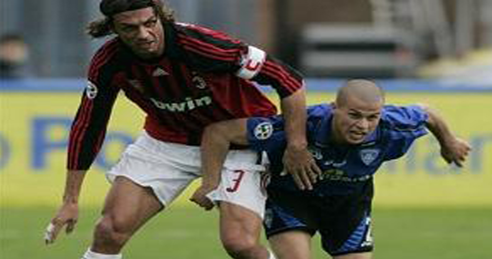
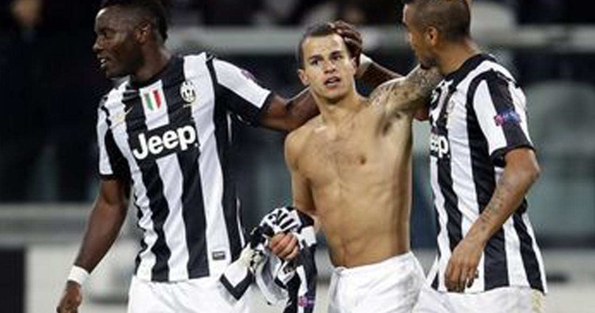

昔は当たられたらボールも一緒に飛ばされる感じだったんだけど、今は普通に潰される。接触を避ける方向に進んだからこーなったのかな。弱くなったとは思わないけど、柔らかさがなくなったマイナスの方が大きく見える。

衰えたわけじゃない。でも緩急がなくなった分、確実に対応はしやすくなっている。それでも一対一ならほぼ確実にマークを外せるポテンシャル。にも関わらずワンパターンというかリプレイのよーに仕掛けては捕まるシーンは見てて苛立ちすら覚えます。
2009年6月に出場したUEFA U-21欧州選手権では、チームの4得点のうち3得点に絡み、準決勝進出に貢献した。2011年2月10日国際親善試合のドイツ戦でA代表デビュー。UEFA EURO 2012の代表メンバーにも招集された。2013年6月19日のコンフェデレーションズカップ、日本戦で代表初得点となる決勝ゴールを挙げた。
ユヴェントスの下部組織出身。2006-07シーズン、ボローニャ戦にて公式戦デビュー。途中出場ながらダヴィド・トレゼゲのゴールをアシストする。ユベントスは経験を積ませるため、2007-08シーズンはクラウディオ・マルキジオと共にエンポリにレンタル移籍させた。エンポリはセリエBへの降格が決まるが、ジョビンコは攻撃の核として活躍。6ゴールを記録し、高い評価を受けた。
2015年にユヴェントスからアメリカ・メジャーリーグサッカーに渡り、トロントFCの中心選手として活躍してきたジョヴィンコ。同リーグでは最高の選手と評価されており、115試合で69得点を決めてきた。
「実際のところ、ジョヴィンコは十分でないリーグでプレーしている。彼が挙げているゴール数はさほど重要ではない。彼のクオリティーを考えれば、活躍は当然の結果だからね。問題はああいったリーグでプレーしていることによるメンタリティーだよ。慣れてしまっているだろうからね」ジョヴィンコが最後にイタリア代表でプレーしたのは2015年10月のノルウェー戦までさかのぼり、それ以降は招集すらされていない。
「イタリアの至宝」と呼ばれ、マルチェロ・リッピも賞賛する高い戦術理解度とアンドレア・ピルロにも匹敵するフリーキックを持つと言われ、ディノ・ゾフはファンタジーの面ではデル・ピエロを超えると評価している